Factory canteens, vending and frozen food. All of it Halal certified, and all of it checkable. We publish every certificate number, scope and expiry date, so you can look us up on the government registry before we ever meet.
Three ways we feed a factory.
All three draw on the same certified list under the same JAKIM reference. What changes is how the food reaches the floor: a canteen we staff, a machine that cooks, or a pack that keeps.
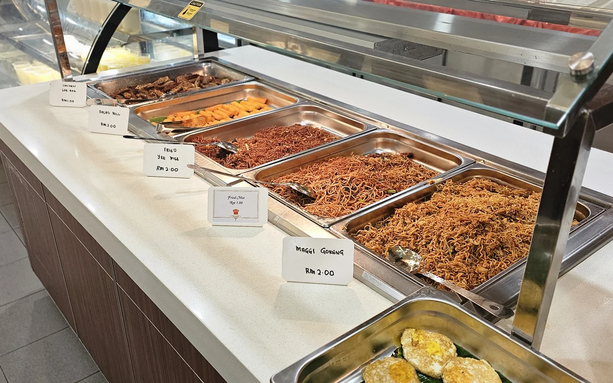
Industrial catering
We run the canteen: staff, menu, service, cleaning. Malay, Chinese, Indian and Western, every dish drawn from the certified list. See the sites →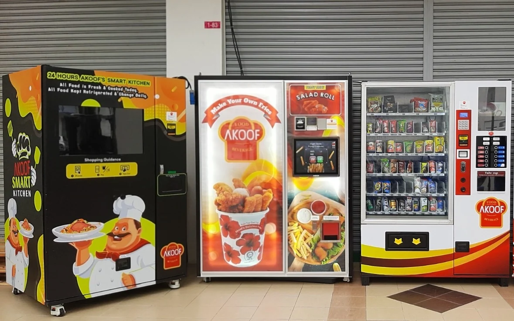
Vending
We build the machines, not just fill them. That includes the fresh-fry unit Bernama called the first of its kind in Malaysia. 35 seconds to hot →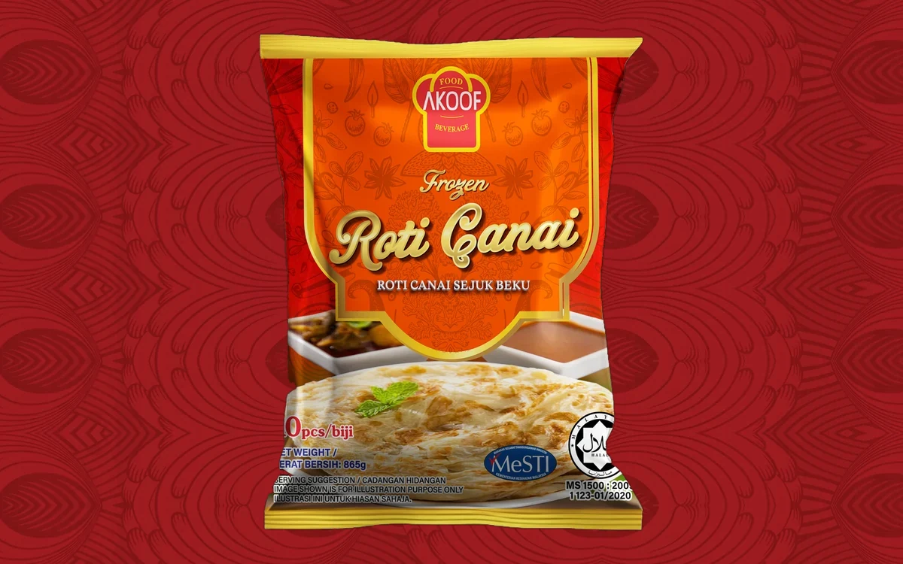
Frozen food
Four lines under our own label, made in our kitchen and packed here. Roti Canai is in production; the other three are through design. See the packs →3 factory canteens, running right now.
Not a list of names we once quoted for. These are the sites we operate today, each registered with the Ministry of Health under its own premises certificate.
Analog Devices
Cafeteria management- Largest site
- 1,200
- With us
- 1 year
FSSM052605766-0Valid to 21 May 2029
Lumileds
Cafeteria management, two plants- Largest site
- 1,000
- With us
- 3 years
FSSM092301293-0P2 plant, Bayan Lepas
Iotronix
Cafeteria management- Largest site
- 500
- With us
- 2 years
FSSM032500982-0Valid to 10 Mar 2028
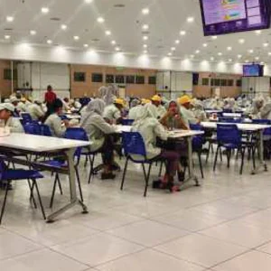
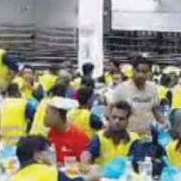
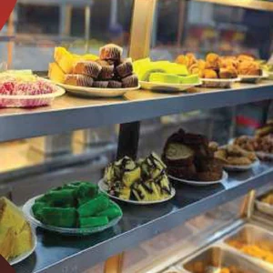
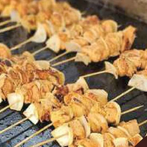
Plants we run, and our own kitchen. The three sites named above are not pictured: those contracts are under non-disclosure, and we would rather show you nothing than publish something we were not given permission to.
Site figures as supplied by Akoof, 31 July 2026. Every certificate number is printed in the register below.
The logos, and what each one is.
A logo wall usually implies more than it means, so this one is labelled. Analog Devices and Lumileds are two of the three canteens we run today. Jabil, ASE Group, Bosch and Molex are past customers. That is the whole list.
- Current
- Current
- Past
- Past
- Past
- Past
Logos are the property of their respective owners and are shown with Akoof's confirmation that their use is cleared.
Our semiconductor customers apply the Responsible Business Alliance Code of Conduct to suppliers working on their sites, and we operate to those requirements. We are not an RBA member and we hold no RBA audit report. If your tender needs one, tell us early and we will say plainly whether we can meet it.
Malaysia's first frying vending machine.
Not a chiller with a spiral. A working fryer behind glass: you pay, it cooks, and about half a minute later a hot portion drops. Bernama reported it in November 2019 as the first of its kind in the country. Night shift is the reason it exists.
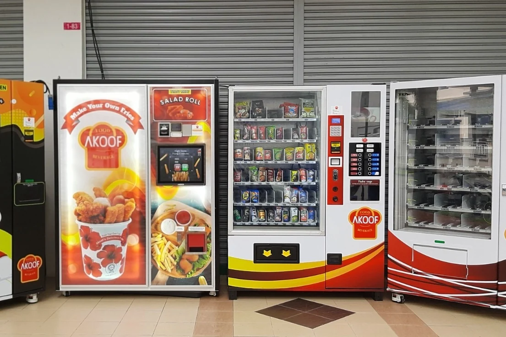
We build them as well as fill them. Akoof supplies and manufactures vending machines: snack and drink units, mini-market fit-outs inside factories, and the 24-hour smart kitchen. Reported by Bernama, 11 November 2019, first sited at KOMTAR, Penang.
Under our own label.
Roti Canai is in production, with net weight, JAKIM reference and barcode printed on the film. The other three are through design, waiting on approval, Dewan Bahasa endorsement and lab analysis. We show them as what they are.
And a bulk line that never sees a shelf.
Not everything we make is packed for retail. A canteen or a central kitchen buys the same food in food service packaging: a clear bag, a printed label, no display film. The four packs above are the ones you would find in a freezer aisle. These nine arrive on a pallet.
-
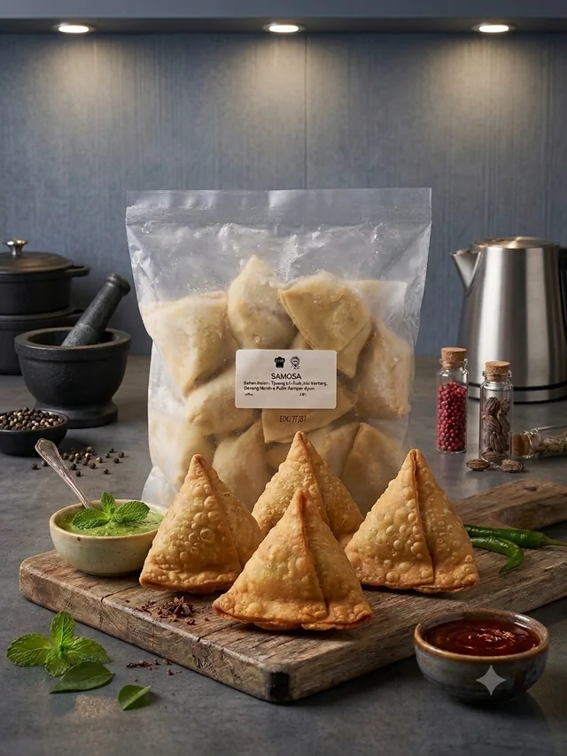
-
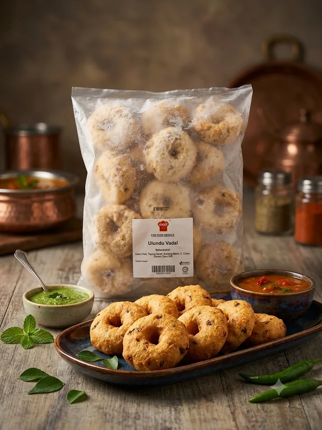
-
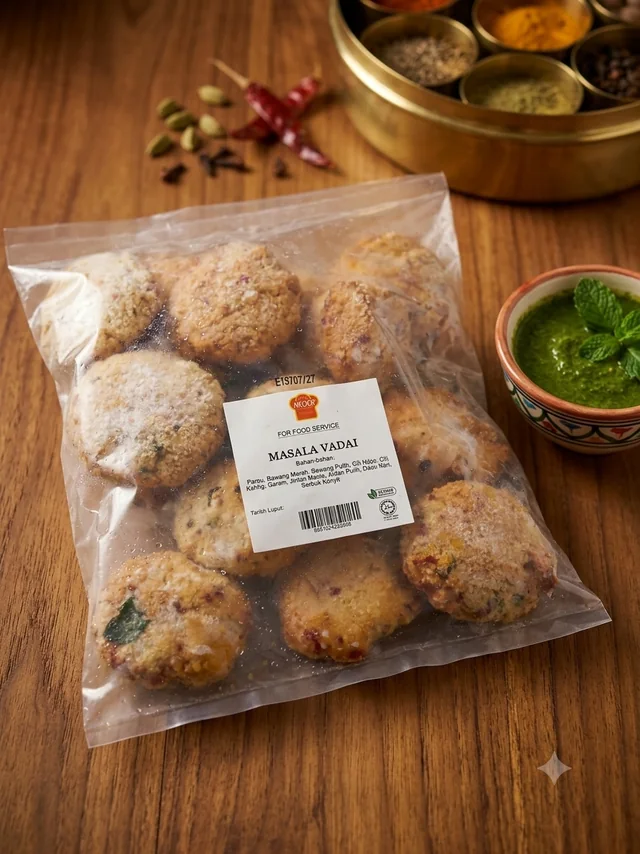
-
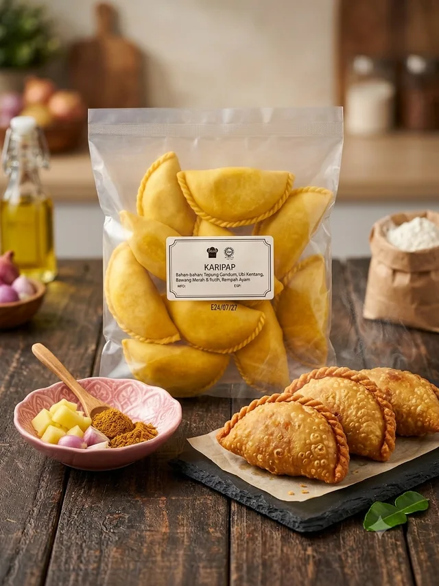
-
-
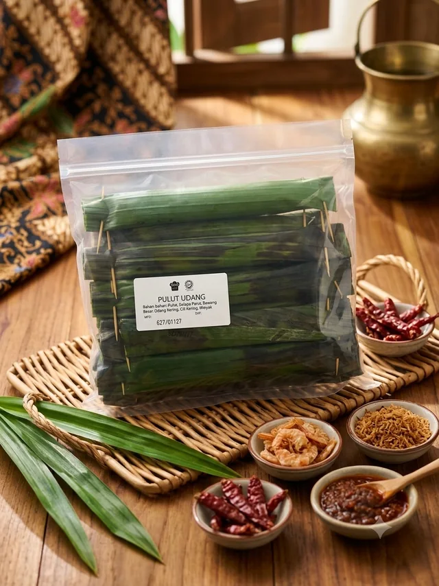
-
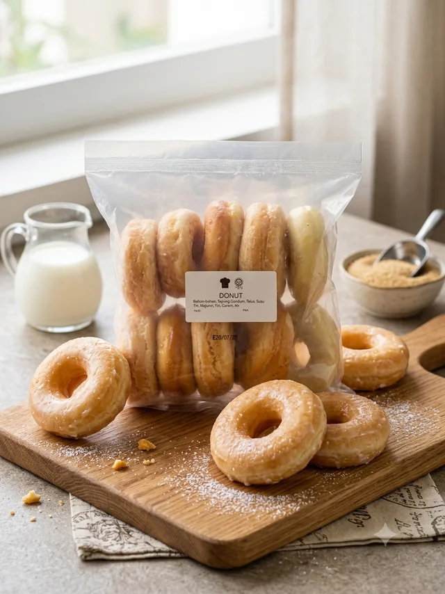
-
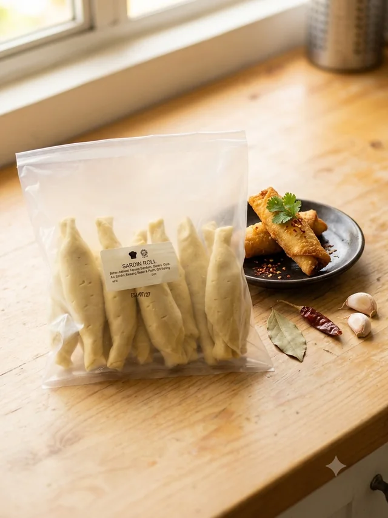
-
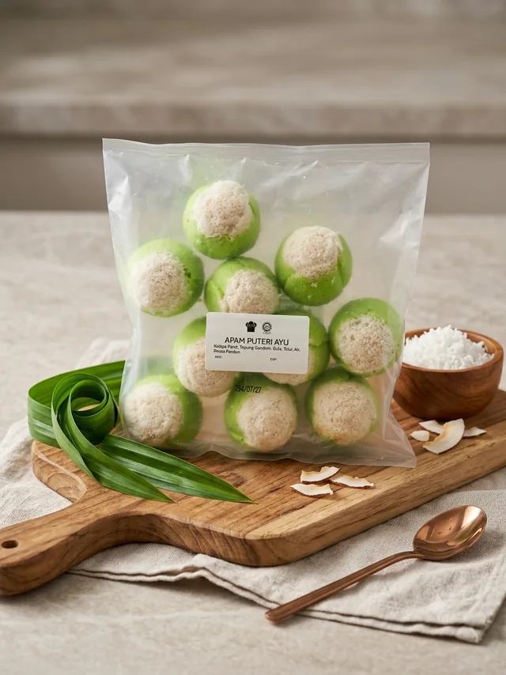
Photographs supplied by Akoof, 4 August 2026. Pack sizes and case quantities for the food service range are still to come.
Piece counts, weights and barcodes confirmed by Akoof, 3 August 2026. Ingredients as printed on the film.
Every number here is yours to verify.
Twelve current documents, one JAKIM reference and 123 certified dishes. All of it published in full, in five parts.
- 01The register12 documents
- 02InsuranceAllianz, to Jun 2027
- 03RecognitionPIHEC 2022
- 04Certified scope123 dishes
- 05Verificationhalal.gov.my
Printed in full, not summarised.
Ten registrations and two insurance policies, all current.
| Certificate | Number | Covers | Issued | Valid to | Status |
|---|---|---|---|---|---|
| JAKIM Halal, menu list (100 items) | JAKIM.700-2/3/1 123-01/2020 |
Akoof Food and Beverage Sdn. Bhd., D'Piazza Mall | 16 Mar 2026 | 15 Mar 2028 | Valid |
| JAKIM Halal, pastes & products (23 items) | JAKIM.700-2/3/1 123-01/2020 |
Akoof Food and Beverage Sdn. Bhd., D'Piazza Mall | 16 Mar 2026 | 15 Mar 2028 | Valid |
| MOH food premises registration (P2: catering) | FSSM032303329-0 |
D'Piazza Mall, Bayan Lepas | 23 Mar 2026 | 23 Mar 2029 | Valid |
| MOH food premises registration (P3: preparation, processing, storage) | FSSM052605766-0 |
Analog Devices site, Bayan Lepas FIZ Phase 4 | 21 May 2026 | 21 May 2029 | Valid |
| MOH food premises registration (P3: preparation, processing, storage) | FSSM032500982-0 |
Iotronix Technologies site, Bayan Lepas Industrial Park | 10 Mar 2025 | 10 Mar 2028 | Valid |
| MOH food premises registration (P2: catering) | FSSM092301293-0 |
Lumileds 2 site, Bayan Lepas Industrial Park | 15 Sep 2023 | 15 Sep 2026 | Valid |
| MOH BeSS, “Bersih dan Selamat” recognition | BeP0924004-0/1 |
Akoof Food and Beverage (Lumileds 2) | 13 Dec 2024 | 12 Dec 2027 | Valid |
| MBPP food premises hygiene rating, Grade A “Amat Bersih” | n/a |
D'Piazza Mall, Bayan Lepas | n/a | No expiry stated | Valid |
| MBPP business premises licence | KOM00007561 |
D'Piazza Mall, Bayan Lepas | 4 Feb 2026 | 31 Dec 2026 | Valid |
| SSM certificate of incorporation | 201901007532 (1316859-A) |
Akoof Food and Beverage Sdn. Bhd. | 6 Mar 2019 | No expiry | Valid |
| Allianz public liability (Business Shield, premises) | 24CKJ5000153-02 |
RM1,000,000 any one accident, unlimited any one period. Malaysia. Food and drink poisoning endorsement | 25 Jun 2026 | 24 Jun 2027 | Valid |
| Allianz product liability | 25LKJ5000004-01 |
RM250,000 any one occurrence and in the aggregate. Food and beverage products. Worldwide excluding USA and Canada | 25 Jun 2026 | 24 Jun 2027 | Valid |
Food premises registration in Malaysia is issued per site, not per company, which is why four of these carry a client address rather than ours.
The table scrolls sideways on a narrow screen.
Register as published on 2 August 2026. Certificate scans available on request.
HACCP, ISO 22000 and MeSTI certification are in progress and are deliberately not listed above. If a tender requires any of them today, we would rather tell you now than at the audit.
What a tender usually asks for
- Public liability
- RM1,000,000 any one accidentUnlimited in any one period
- Product liability
- RM250,000 any one occurrenceRM50,000 product recall sublimit
- Food poisoning
- Endorsed on the policyClause PCK-CL055(F)
- Both run to
- 24 June 2027Renewed 15 June 2026
Underwritten by Allianz General Insurance Company (Malaysia) Berhad, issued through Keystone Risk Partners Sdn. Bhd. Full schedules go out with any tender submission.
An award, not just a licence.
A licence says we are allowed to operate. This one says the state's own Halal body thought we were doing something worth pointing at.
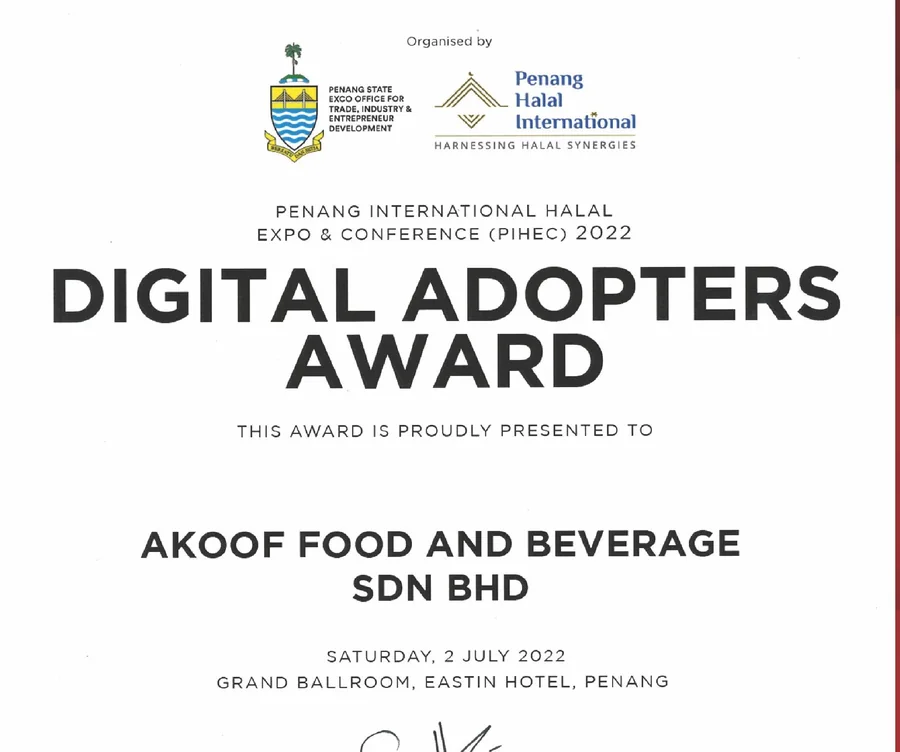
Digital Adopters Award, PIHEC 2022
Presented to Akoof Food and Beverage Sdn. Bhd. on Saturday 2 July 2022, Grand Ballroom, Eastin Hotel, Penang, at the Penang International Halal Expo & Conference, under the Halal Excellence Award programme. Handed over by the Tuan Yang Terutama, Governor of Penang.
Organised by the Penang State EXCO Office for Trade, Industry & Entrepreneur Development · Penang Halal International
Akoof is also listed in the Penang Halal International business directory at
penanghalal.international. A third place, independent of this site, where our
address and phone number can be checked.
Every dish here is on the certificate.
Nothing outside this list ever reaches a tray. It is the full scope we are certified to cook rather than a daily menu: no site runs all 123, and your canteen’s menu is built with you.
JAKIM's own registry will say the same thing.
On the Halal Malaysia portal we are listed under Produk Makanan / Minuman, under the name Akoof. No account needed.
Open the portal →Running a canteen tender?
Send us the site, the headcount and the shift pattern. What comes back is a written proposal, not a callback asking for the same three things again.
Call
+60 4-611 8885 Office +60 17-786 8185 EnquiriesWhere we are
70-01-83, D'Piazza Mall,Jalan Mahsuri,
11950 Bayan Lepas,
Pulau Pinang
This address is itself a registered food premises, not just an office:
FSSM032303329-0, valid to 23 March 2029.
Company profile, 44 pages
Menus, certificates, machines and past sites. 8.8 MB, a sixth of the old file, and it opens on a phone.